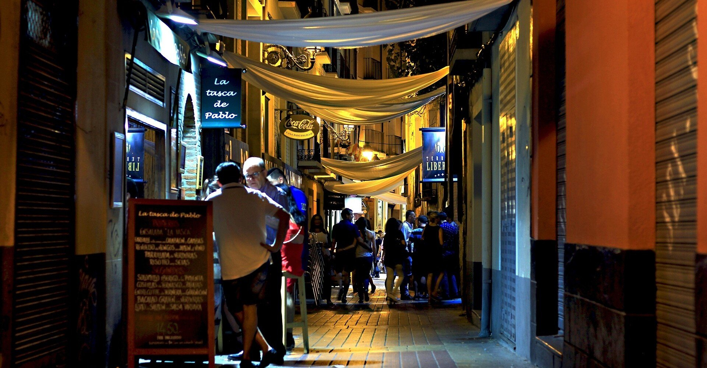

中学の卒業アルバムに掲載されている文集には、「英雄になる」とだけあった。
英雄の意味さえ曖昧なまま、ただ漠然と続く人生に一つだけでもいいから憧れを持ちたかったのかもしれない。しかし、いくら学生であったとはいえ、「英雄」なんて言葉を実社会で、それも将来の夢として掲げていた自分が今ではとても恥ずかしい。
第一志望にしていた都内の難関大に合格したものの、高校時代の詰め込み学習のせいなのか、入学後は学問のやる気が起きず授業をサボってばかりいた。いわゆる燃え尽き症候群ってやつだ。
無気力に過ぎる毎日を、大学の学費以外一切援助をしてくれない親のせいで、学生にも関わらず自らの食い扶持を稼がなくてはならなかった。「人生の夏休み」と称される大学時代なのに、とついネガティブになる気持ちをどうにかすることが喫緊の課題だった。
「特別な資格は必要なし！ あなたのＹＥＳをお客様にご提供する簡単なお仕事です」
コンビニで手にした求人雑誌に奇妙な募集タイトルが踊っている。「仲のいい職場で」「とってもアットホームな職場ですよ」といった暑苦しいキャッチコピーの中で異彩を放っており、ひと際目立っているように見えた。
思えば決して周囲に自らを主張することはなく、親や先生、友人たちの意見に同調ばかりしていたせいで、いつからか自分が何をしたいのかさっぱり分からなくなっていた。自分の人生なのに、誰かから頼まれた人生を僕は歩き続けていた。
そして、それはきっとこれからも変わらない。親の望みそうな大企業の社員や地元の公務員にでもなって、三〇歳くらいでそこまで好きでもない女性と結婚するのだろう。いつか子どもができて、成人する頃には仕事も引退。あとはそれほど残っていない寿命を周囲の幸せに貢献しながら、しっかり使い切るのだろう。
それは果たして虚しいことなのだろうか。特にやりたいことも見つからず、むしろそんな人向けにもちゃんとレールを敷いてくれている社会に「ありがとう」と言いたいくらいだ。
このアルバイトについても、まさに僕にぴったりな仕事内容だ。僕は手に取っている求人雑誌をまだ買ってもいないのに、気づいたらそのページの右上を小さく折っていた。
翌週、面接会場である雑居ビルに入居している小さな事務所のドアをノックすれば、いかにも人の好さそうな年配男性が「アルバイトに応募してくれた方？」とひょっこり顔を出した。
「はい」
「そうですか。ではこちらに」
一階下の無機質な会議室に通され、寂しそうに佇むパイプ椅子に座る。年配男性は向かいに回り、手を差し出す。履歴書の提出を求められ、律儀に書いたつもりの「自分の名をした他人発信の経歴」を彼に渡す。
「優秀なんだねえ」
彼はぽつりとそう言った。頭を掻き、謙遜する。大人たちの言うことを必死に守ってきたのだから優秀でなくては困る、と内心で呟く。
「君はイエスマンなのかい？」
初対面のはずなのに、懐かしさすら感じるその温かみのある声に緊張は一気に緩む。その瞬間から「これまでどれほど他人にイエスと言ってきたか」を滔滔と喋り続けた。彼が苦笑いを浮かべるほど熱弁するものだから、今まで見つからなかった情熱はここにあったのかとつい錯覚してしまうほどに。
数日後。希望者がいる場所まで赴いてただ肯定するだけの仕事、その初日を迎えた。イエスマンである自分にとって、これほど身に合った仕事はない。まだ何もしていないのに確固たる自信を持って、都内繁華街にある待ち合わせ場所のバーに乗り込む。
「おっ。あんたがイエスマンか？」
そこには大学生らしき若者、男女四人組がいた。彼らは見るからに日本人なのに全員の髪色が異なっている。茶色のロン毛、黒のツーブロック。金髪のロングヘアに青のボブカット。遊び人のオーラが丸出しだ。
「そうです。ご依頼いただいたイエスマンです」
「そっか。なら早速だけど。あんたさ、ここで死んでよ」
「はい？」
思わず聞き返す。若者たちはにやにやしながらこちらを見ている。その目には蔑みと嘲笑の混じった、鼻をつまみたくなるほどの悪臭が漂っている。
「『はい』のイントネーションが違うよ、お兄さん。『はい！』って元気よく答えなきゃ」
ガムを噛む長身の男が言う。その隣にいる金髪の女は何が面白いのか、ずっと笑い続けている。
言葉が出てこない。完全に馬鹿にされている。みるみるうちに頭に血が上っていくのを感じ、こんなに怒りを覚えるのはいつぶりだろうかと考える。恐らく初めてのことではないか。何事も卒なく、人様に迷惑をかけまいと生きてきたのに、僕は今まさに人様に迷惑をかけられている。こんな悲劇があるだろうか。いや、これは見方を変えれば喜劇だ。そうだ、きっとそうに違いない。
「おい、何か言えよ。こっちは金払ってるんだよ」
つまらないことを考えているうちに、いかにも腰巾着そうなツーブロック男が声を強めた。若者向けのバーとはいえ、ダーツやビリヤードといった小洒落た遊びをしている人たちの視線がこちらに集中しており、恐らく若さゆえのおふざけには見えていないだろう。
それでも何も言葉が出てこない様子に痺れを切らしたのか、その集団は僕を囲み手拍子を始めた。そして、「死ね。死ね。死ね」と連呼する。物々しい雰囲気を察して、男女のカップルが店を出た。
どうにかしたいと思い、救いを求めてバーのマスターに助けを求める。一瞬目が合うが、すぐに逸らされる。そこには「揉め事に巻き込むな」という強い意志を感じた。他人とは所詮そんなものなのか。誰にも聞こえないようにため息をつく。
「いつまでモタモタしてんだよ。そんなに嫌なら、俺がやってやろうか」
おもむろに長身の男がジーンズの後ろからポケットナイフを取り出した。状況はさすがにまずいところまで来ていた。土下座でもなんでもしよう。どんな手を使っても、ここから早く逃げなければ。
「あーあ。見苦しいね、今の若者は。これじゃあ小学生と間違われてもおかしくない」
店のドアベルが鳴っていた。振り向くと、古めかしい鍔の長い黒いハットを被った男がそう言っている。
「誰だ、お前」
長身の男が輪から離脱し、その男に近づく。その一歩は大きく、数メートルの距離でも数歩で到達するほどだ。横で「はあ。怒らせちゃったよ。もう手に付けられないよ」と青のボブカットの女が小さく言う。
「いや、そんなこと言ったら小学生に失礼か。今も昔も、小学生でも賢いのがたくさんいるしな。訂正。お前らはゴミくずだ」
「なんだと！」と声を張り上げたと同時に、ポケットナイフがその男めがけて振り落とされる。思わず目を瞑ってしまう。何でこんなことになっているんだ。こんな惨劇を見に来たわけじゃない。叫びたくなる気持ちを抑え、目を開けてみると、その男は床に倒れ込んでいた。
目を瞑っていた数秒間で状況は一変した。手をわざとらしく叩き、ハットの男は残りの三人に告げる。
「君たちもこうなりたい？ お望みなら、やぶさかでもないけど」
三人はみるみるうちに顔を青くし、倒れ込む男を何とかおぶり足早に店を出た。いつしか店内にいる全員の視線を釘付けにしていた男は気にせずカウンターに座り、慣れた口調でジンウォッカを注文し、やがて立ち尽くす僕を手招いた。
状況がうまく飲み込めず、言われるがまま男の隣に座る。店内は既に時を戻したかのように動き出している。
「君はイエスマンになりたいわけじゃないだろ」
「えっ」
ハットのせいで目元があまり見えないが、どうやら笑っている。息が上がっている様子もなく、つややかな口元を緩め手元のグラスを傾けた。あんな屈強な男を倒したはずなのに、その手は光沢すら放っており、見たことのない不可思議な輝きを持ち合わせていた。
「君はこれから、英雄になるんだ」
男がそう告げると、随分昔に書いたあの夢が、ほんの一瞬だけ蘇ってくる。
彼は「英雄募集中」の求人広告を見て今の仕事をしているという。
字面だけ見れば「そんなこと誰が信じるのか」と全員が嘘だと決めつける発言だが、その夜の僕は何の疑念もなく彼の喋ることを信じていた。
「実は明日、世界に隕石が落ちて地球が滅亡するんだ。よくある映画のように国々の機関や才能ある人達が力を尽くして幸運にも滅亡を回避した、といったハッピーエンドは現実にはやってこない」と絶望的なことを言われても、恐らくあの夜の僕は彼の言うこと全てを信用していただろう。
「売れないスタントマンをしていてさ。もういい歳だというのに、身体だけは若い頃のままで。同窓会で再会する太った元クラスメイトなんかはそんな俺を羨ましがるけど、俺の何倍も稼いでいて。最初は賃金格差に憤って、やりがい搾取だとか稼げる業種だとかを調べては熱心に読んでいたが、今の自分にはどうしようもできないと分かってからは彼らに嫉妬すらしなくなったんだ。そんな頃、誰かが思いついたいたずらのような英雄の募集広告を見かけて、これまでとは違う人生を体験できるんじゃないかと思って応募したのさ」
手で氷を回し、さっきまで冷たい目で見ていたマスターにも優しい彼の経緯に同情すら覚えていると、彼が僕のためにと勝手に頼んだアルコール度数の高い知らない酒が喉を焼いてくる。今日は色々ありすぎて、まるで自分の人生でないみたいだ。
「君もどうせなら、英雄になったらどうだ」
冗談とも本気ともつかない口調で彼は言う。僕は映画のキャストになっている夢でも見ているのだろうか。彼にばれないように太ももをつねってみても、ちゃんとした痛みが返ってくるだけだった。
「英雄なんてとんでもない。僕にはイエスマンがお似合いなんです」
謙遜のようで本音でもある言葉を並べても、彼はグラスから目を離さない。
「俺もそう思っていた頃があったよ。でも、ある時気づいたんだ。人生は所詮誰かが仕組んだいたずらに過ぎないとね」
「誰かが仕組んだいたずら？」
「その誰かのせいで、こんな下らない世界で毎日必死こいて生きている。だったら、周りなんか気にせず勝手に生きてやろうじゃないか。そう思えば、何でもできる気になるんだよ」
「そんなもんなんですかね」
僕の相槌に彼は懐かしそうに遠くを見るようだった。
「俺はどうせならアクション映画の主人公みたいになりたかった」
少年じみたことを言い出したと思ったら、彼は好きだというアクション映画名を口にする。その瞬間だけ酔いが覚めたのは、僕も何度もその映画を観ていたからだ。シリーズが作られるほどの人気作で、何作目が好きです、と返すと彼は陽気な正体を隠そうともせず饒舌になる。
僕にもこんな友達が欲しかったな。社会が定めたフォーマットの人生に時間を割かずに、こんな友達のために人生の時間を使いたかった。彼と笑い合うたび笑い涙を拭うふりをして、そんな寂しい涙を拭った。
「そうさ。だから、君も……」と彼が話すのを最後に、楽しい時間を終わらせまいと、弱いにも関わらず何杯も呷った酒のせいで僕は夢の中に落ちていく。
気づけば、あの夜から一〇年近くの時が流れていた。
あの夜、彼と飲んだ酒の酔いが回り目を覚ますと自宅のベットの上にいた。やっぱり夢だったんだと自分を納得させようにも、あまりにも現実味のある出来事だったからか、あの夜のことは今でも忘れることができない。
その証拠に僕は大学卒業後、求人広告専門のライターになっていた。かつて応募したイエスマンの求人や彼が応募したという英雄募集の広告に関われるかもしれないと思ったことがきっかけだ。僕は中学の卒業アルバムに「英雄になります」と書いた頃から全く成長しない、大人の身体をした子どもだった。もちろん悪い意味で、だ。
三〇を目前として、あの頃思い描いていた「好きでもない女性と結婚する」といったつまらない夢は努力していないせいでもちろん叶っていなかったが、仕事の方はというと、新卒・中途・アルバイトと様々な求人広告の制作に参加してきたおかげで、最近ようやくあの広告を出していた零細企業に出会うことができた。
電話越しに依頼を受けたその時の様子は、職場の同僚に怪訝な顔で見られるほど盛り上がってしまった。
「以前弊社でアルバイトをしてくれていた方に広告を書いてもらえるとは。私としても嬉しいですよ」
幾分歳を取ったようにも感じた、あの年配男性と電話越しではあったが再会を果たせた。生きていて良いことなんてなかったように感じていたが、その日だけは良い日だったなと思えた貴重な日になった。
そんな再会もあってか、いつも以上の成果を出したいと「英雄募集」と名がついた広告案を書いたもののパッとせず、良い案はほかにないかと近所の喫茶店で一人ノートパソコンを広げていた。
土曜の夜、周りは文化系カップルと家庭に居場所のなさそうなくたびれたおじさんだけで、何とも静かな空間だ。ライターになった頃から世話になっている店で、この場所で何度も閃きが舞い降りた経験もある。勝負の仕事をする時はここに来て仕事に集中するのがルーティンとなっていた。
座っている一番窓際の席から外を眺める。今年初めての雪が舞い、東京とは思えないほどの幻想を漂わせている。仕事中ではあったが、幸せな光景の一部になれていることを実感していると、店から一〇メートルほど先の歩道で何人かが揉めている様子が見て取れた。
こんな聖夜に何をしているのだと若干ではあるが込み上げてくる怒りを抑え目を細めてみると、二〇代中盤くらいの女性が若い男二人組にカバンを引っ張られており、明らかに嫌がっている様子だった。
おいおい、今時そんな輩がまだ東京にいたのかと思えば、偉そうに広げていたパソコンや書類をしまい、そそくさと会計を済ませ外に出た。そして、彼らの元へ駆けつけて言い放った。
「あーあ。見苦しいね、今の若者は。これじゃあ小学生と間違われてもおかしくない」
まるで身体が吸い寄せらせていくようなほどの速さで臨戦態勢を取る。吐く息は白く、視界には濁った街を清らかにしてくれるような雪が降る。
自分はどうしてしまったのか。中学の卒業アルバムに書いた「英雄」の二文字が頭に浮かぶ。未だに英雄になりたいと無意識に思っているのか。それともこれは、あの夜彼が話していた「誰かに仕組まれたいたずら」というやつなのか。
「誰だ、お前」
二人組の大柄の方の男がこちらを睨めつけている。自分よりも大きな人間と対峙すると、遺伝子が「勝てないからやめておけ」と警告してくるようでもあった。改めて小柄ながらも縦横無尽の活躍をする世界中のプロ格闘家を尊敬した。
「はあ。怒らせちゃったよ。もう手に付けられないよ」
二人組の小さい方がそう呟いた。後になって気づいたが、ここまでの台詞があの夜と全く同じだった。こんなことがあるのかと思ったが、偶然はまだ続く。やはり僕には英雄は向いていない。以前のようにイエスマンになりたいわけでもなかったが、今はしがないライターとしての身分で十分だった。僕にとって英雄の肩書は彼しかいないのだ。
「君が言ったさっきの台詞、あれ俺のなんだけどな。それとも君も、英雄志望になったのかい？」
黒いハットを被る一〇年越しの彼は、一切老いていないように見えた。彼だけ映画の世界から飛び出してきた人物で、世界中で彼だけがつまらない現実を一掃するために日夜闘っているのだと、相変わらず子どものようなことを思ってしまった。
「つべこべ言ってんじゃねえぞ」と怒り心頭で向かってくる興奮気味の男の拳を華麗にかわし、綺麗な背負い投げを決める。雪はさほど積もっていないから、ダメージは大きいだろう。
「君もこうなりたい？ お望みなら、やぶさかでもないけど」
そうしてハットを上げ涼しい目元を見せる。目には見えない彼の情熱が雪の結晶すら溶かしていくようだった。
彼の決め台詞が決まった横で、僕は目の前で起こっている出来事をまるで茶の間で観ている映画のように感じていた。脳内で僕たちの好きなアクション映画のBGMを流しながら、この仕事の広告コピーどうしようかなと悠長に考えている。